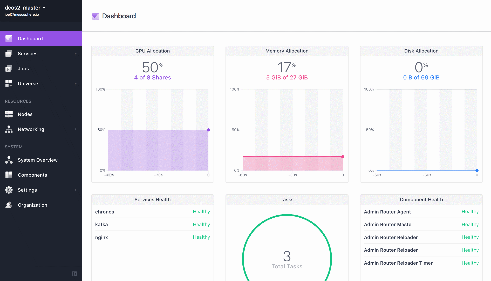

With this installation method, you package the DC/OS distribution yourself and connect to every node manually to run the DC/OS installation commands. This installation method is recommended if you want to integrate with an existing system or if you dont have SSH access to your cluster.
The advanced installer requires:
- The bootstrap node must be network accessible from the cluster nodes.
- The bootstrap node must have the HTTP(S) ports open from the cluster nodes.
The DC/OS installation creates these folders:
| Folder | Description |
|---|---|
/opt/mesosphere |
Contains all the DC/OS binaries, libraries, cluster configuration. Do not modify. |
/etc/systemd/system/dcos.target.wants |
Contains the systemd services which start the things that make up systemd. They must live outside of /opt/mesosphere because of systemd constraints. |
/etc/systemd/system/dcos.<units> |
Contains copies of the units in /etc/systemd/system/dcos.target.wants. They must be at the top folder as well as inside dcos.target.wants. |
/var/lib/zookeeper |
Contains the ZooKeeper data. |
/var/lib/docker |
Contains the Docker data. |
/var/lib/dcos |
Contains the DC/OS and Mesos Master data. |
/var/lib/mesos |
Contains the Mesos Agent data. |
Important: Changes to /opt/mesosphere are unsupported. They can lead to unpredictable behavior in DC/OS and prevent upgrades.
Prerequisites
Your cluster must meet the software and hardware requirements.
Configure your cluster
Create a directory named
genconfon your bootstrap node and navigate to it.mkdir -p genconfCreate a configuration file and save as
genconf/config.yaml.In this step you create a YAML configuration file that is customized for your environment. DC/OS uses this configuration file during installation to generate your cluster installation files.
You can use this template to get started. This template specifies three Mesos masters, three ZooKeeper instances for Exhibitor storage, static master discovery list, internal storage backend for Exhibitor, a custom proxy, and Google DNS resolvers. If your servers are installed with a domain name in your
/etc/resolv.conf, you should adddns_searchto yourconfig.yamlfile. For parameters descriptions and configuration examples, see the documentation.Tip: If Google DNS is not available in your country, you can replace the Google DNS servers
8.8.8.8and8.8.4.4with your local DNS servers.--- bootstrap_url: http://<bootstrap_ip>:<your_port> cluster_name: '<cluster-name>' exhibitor_storage_backend: static ip_detect_filename: /genconf/ip-detect master_discovery: static master_list: - <master-private-ip-1> - <master-private-ip-2> - <master-private-ip-3> resolvers: - 8.8.4.4 - 8.8.8.8 use_proxy: 'true' http_proxy: http://<proxy_host>:<http_proxy_port> https_proxy: https://<proxy_host>:<https_proxy_port> no_proxy: - 'foo.bar.com' - '.baz.com'Create a
ip-detectscriptIn this step you create an IP detect script to broadcast the IP address of each node across the cluster. Each node in a DC/OS cluster has a unique IP address that is used to communicate between nodes in the cluster. The IP detect script prints the unique IPv4 address of a node to STDOUT each time DC/OS is started on the node.
Important: The IP address of a node must not change after DC/OS is installed on the node. For example, the IP address must not change when a node is rebooted or if the DHCP lease is renewed. If the IP address of a node does change, the node must be wiped and reinstalled.
Create an IP detection script for your environment and save as
genconf/ip-detect. This script needs to beUTF-8encoded and have a valid shebang line. You can use the examples below.Use the AWS Metadata Server
This method uses the AWS Metadata service to get the IP address:
#!/bin/sh # Example ip-detect script using an external authority # Uses the AWS Metadata Service to get the node's internal # ipv4 address curl -fsSL http://169.254.169.254/latest/meta-data/local-ipv4Use the GCE Metadata Server
This method uses the GCE Metadata Server to get the IP address:
#!/bin/sh # Example ip-detect script using an external authority # Uses the GCE metadata server to get the node's internal # ipv4 address curl -fsSL -H "Metadata-Flavor: Google" http://169.254.169.254/computeMetadata/v1/instance/network-interfaces/0/ipUse the IP address of an existing interface
This method discovers the IP address of a particular interface of the node.
If you have multiple generations of hardware with different internals, the interface names can change between hosts. The IP detection script must account for the interface name changes. The example script could also be confused if you attach multiple IP addresses to a single interface, or do complex Linux networking, etc.
#!/usr/bin/env bash set -o nounset -o errexit export PATH=/usr/sbin:/usr/bin:$PATH echo $(ip addr show eth0 | grep -Eo '[0-9]{1,3}\.[0-9]{1,3}\.[0-9]{1,3}\.[0-9]{1,3}' | head -1)Use the network route to the Mesos master
This method uses the route to a Mesos master to find the source IP address to then communicate with that node.
In this example, we assume that the Mesos master has an IP address of
172.28.128.3. You can use any language for this script. Your Shebang line must be pointed at the correct environment for the language used and the output must be the correct IP address.#!/usr/bin/env bash set -o nounset -o errexit -o pipefail export PATH=/sbin:/usr/sbin:/bin:/usr/bin:$PATH MASTER_IP=$(dig +short master.mesos || true) MASTER_IP=${MASTER_IP:-172.28.128.3} INTERFACE_IP=$(ip r g ${MASTER_IP} | \ awk -v master_ip=${MASTER_IP} ' BEGIN { ec = 1 } { if($1 == master_ip) { print $7 ec = 0 } else if($1 == "local") { print $6 ec = 0 } if (ec == 0) exit; } END { exit ec } ') echo $INTERFACE_IP
Install DC/OS
In this step you create a custom DC/OS build file on your bootstrap node and then install DC/OS onto your cluster. With this method you package the DC/OS distribution yourself and connect to every server manually and run the commands.
Important:
- Do not install DC/OS until you have these items working: ip-detect script, DNS, and NTP everywhere. For help with troubleshooting, see the documentation.
- If something goes wrong and you want to rerun your setup, use these cluster cleanup instructions.
Prerequisites
- A
genconf/config.yamlfile that is optimized for manual distribution of DC/OS across your nodes. - A
genconf/ip-detectscript that matches your environment.
To install DC/OS:
Download the DC/OS installer.
curl -O https://downloads.dcos.io/dcos/stable/dcos_generate_config.shFrom the bootstrap node, run the DC/OS installer shell script to generate a customized DC/OS build file. The setup script extracts a Docker container that uses the generic DC/OS install files to create customized DC/OS build files for your cluster. The build files are output to
./genconf/serve/.Tip: You can view all of the automated command line installer options with the
dcos_generate_config.sh --helpflag.sudo bash dcos_generate_config.shAt this point your directory structure should resemble:
dcos-genconf.<HASH>.tar dcos_generate_config.sh genconf config.yaml ip-detect
**Tip:** For the install script to work, you must have created `genconf/config.yaml` and `genconf/ip-detect`.
From your home directory, run this command to host the DC/OS install package through an NGINX Docker container. For
<your-port>, specify the port value that is used in thebootstrap_url.sudo docker run -d -p <your-port>:80 -v $PWD/genconf/serve:/usr/share/nginx/html:ro nginxRun these commands on each of your master nodes in succession to install DC/OS using your custom build file.
Tip: Although there is no actual harm to your cluster, DC/OS may issue error messages until all of your master nodes are configured.
SSH to your master nodes:
ssh <master-ip>Make a new directory and navigate to it:
mkdir /tmp/dcos && cd /tmp/dcosDownload the DC/OS installer from the NGINX Docker container, where
<bootstrap-ip>and<your_port>are specified inbootstrap_url:curl -O http://<bootstrap-ip>:<your_port>/dcos_install.shRun this command to install DC/OS on your master nodes:
sudo bash dcos_install.sh master
Run these commands on each of your agent nodes to install DC/OS using your custom build file.
SSH to your agent nodes:
ssh <agent-ip>Make a new directory and navigate to it:
mkdir /tmp/dcos && cd /tmp/dcosDownload the DC/OS installer from the NGINX Docker container, where
<bootstrap-ip>and<your_port>are specified inbootstrap_url:curl -O http://<bootstrap-ip>:<your_port>/dcos_install.shRun this command to install DC/OS on your agent nodes. You must designate your agent nodes as public or private.
Private agent nodes:
sudo bash dcos_install.sh slavePublic agent nodes:
sudo bash dcos_install.sh slave_public
Monitor Exhibitor and wait for it to converge at
http://<master-ip>:8181/exhibitor/v1/ui/index.html.Tip: If you encounter errors such as
Time is marked as bad,adjtimex, orTime not in syncin journald, verify that Network Time Protocol (NTP) is enabled on all nodes. For more information, see the system requirements.
When the status icons are green, you can access the DC/OS web interface.
Launch the DC/OS web interface at:
http://<master-node-public-ip>/. If this doesnt work, take a look at the troubleshooting docs